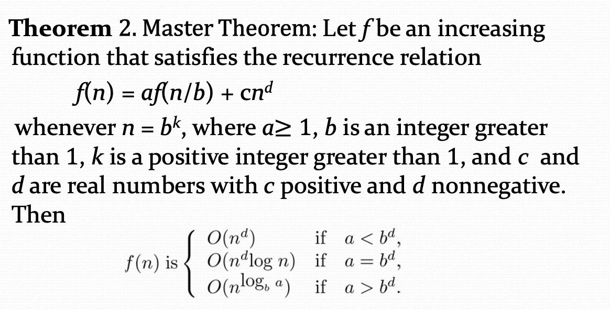
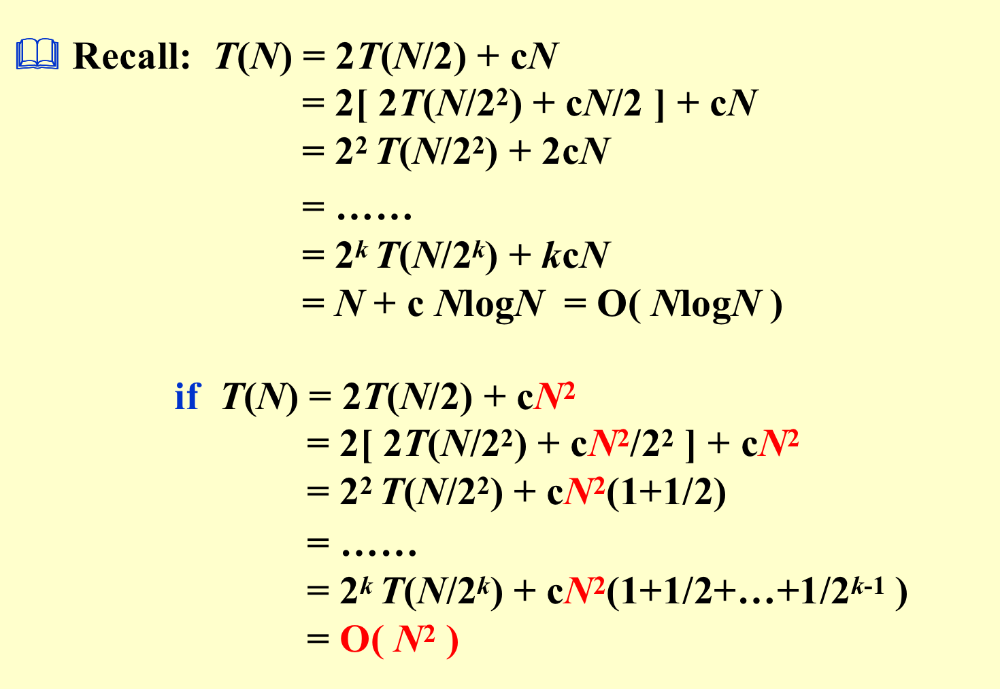
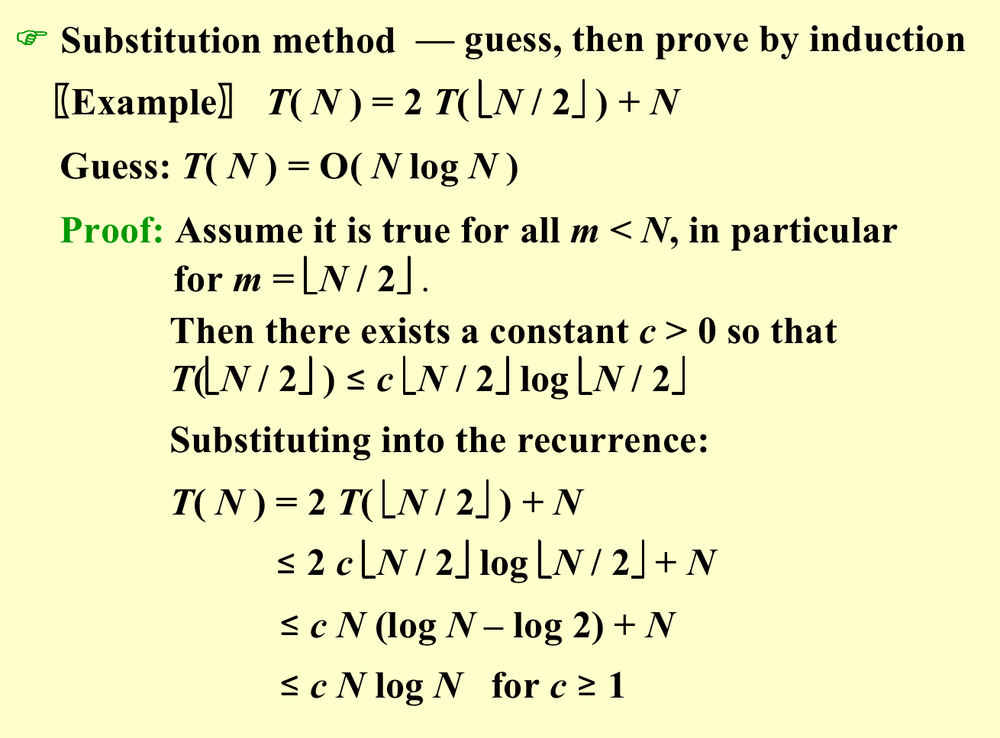
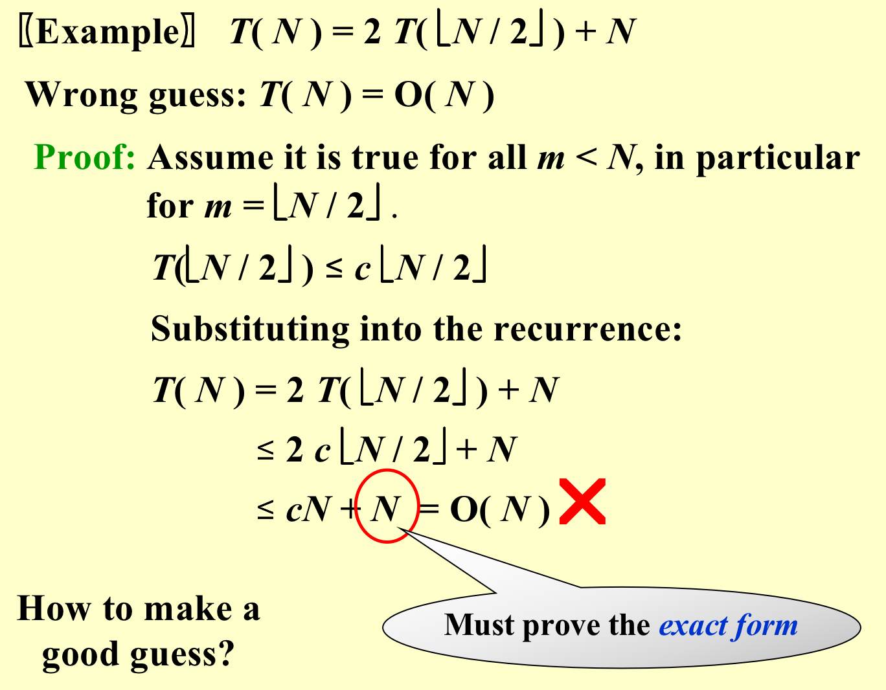
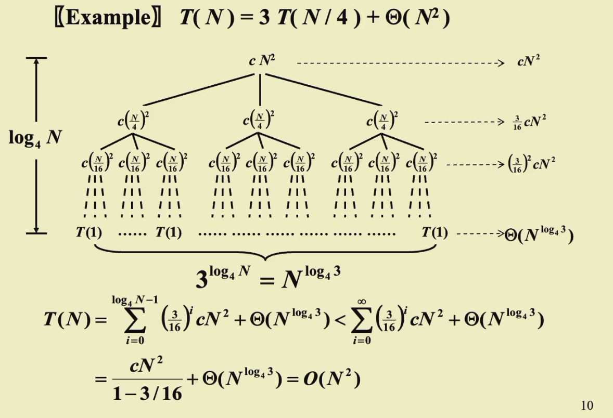
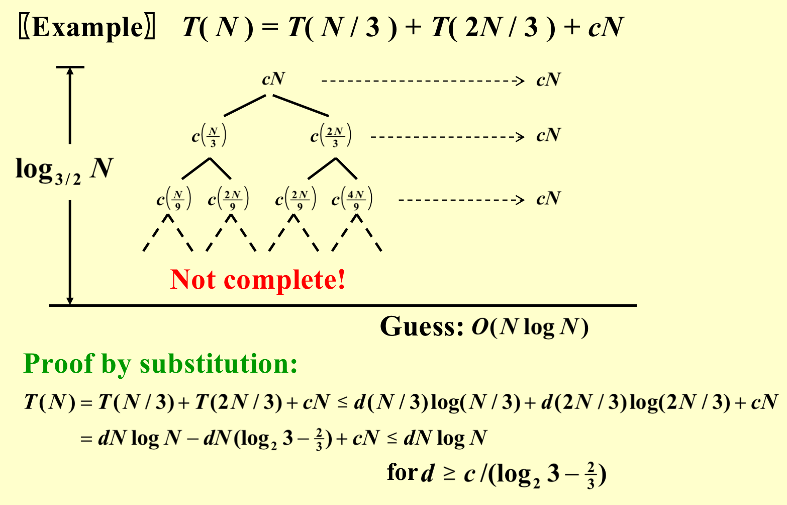
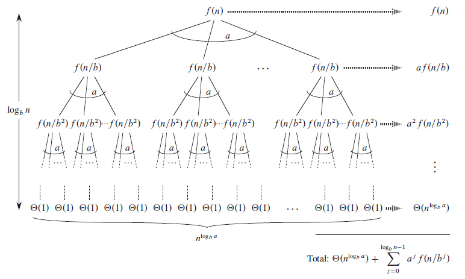
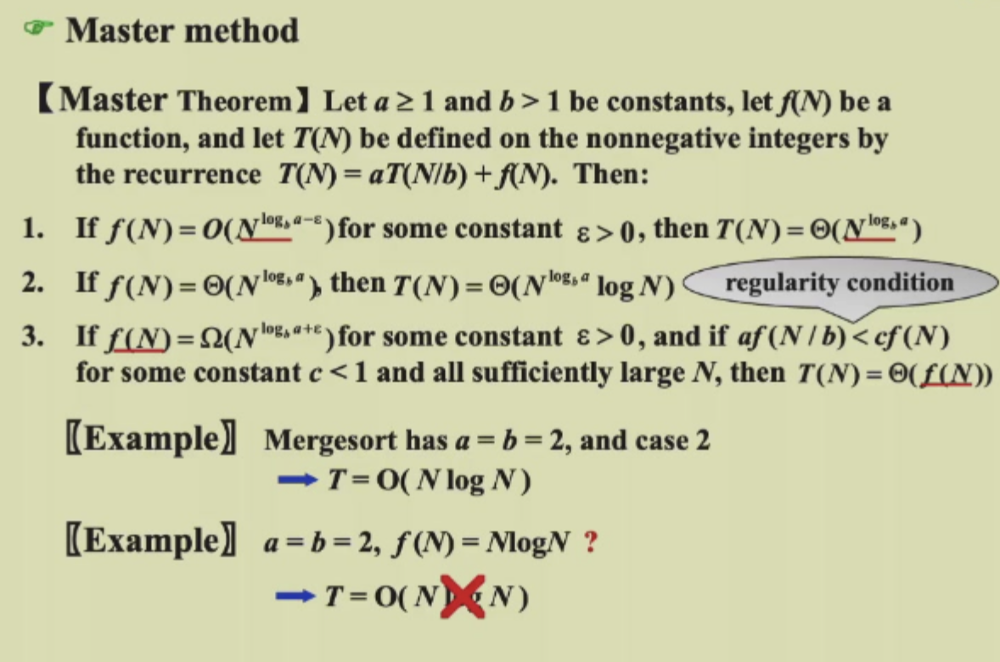

分治算法（Divide and Conquer）¶
主要思想¶
核心理念
- 分解（Divide）：将问题分解为若干子问题
- 征服（Conquer）：递归地解决这些子问题
- 合并（Combine）：将子问题的解合并为原问题的解
通用递推公式¶


示例¶
最大子序列和问题（Maximum Subsequence Sum Problem）¶
时间复杂度： \(O(n \log n)\)
static int MaxSubSum(const int A[], int left, int right) {
int MaxLeftSum, MaxRightSum;
int MaxLeftBorderSum, MaxRightBorderSum;
int LeftBorderSum, RightBorderSum;
int Center, i;
if (left == right) {
if (A[left] > 0) { return A[left]; }
else { return 0; }
}
Center = (Left + Right) / 2;
MaxLeftSum = MaxSubSum(A, Left, Center);
MaxRightSum = MaxSubSum(A, Center + 1, Right);
MaxLeftBorderSum = 0;
LeftBorderSum = 0;
for (i = Center + 1; i >= left; i--) {
LeftBorderSum += A[i];
if (LeftBorderSum > MaxLeftBorderSum) {
MaxLeftBorderSum = LeftBorderSum;
}
}
MaxRightBorderSum = 0;
RightBorderSum = 0;
for (i = Center; i <= Right; i++) {
RightBorderSum += A[i];
if (RightBorderSum > MaxRightBorderSum) {
MaxRightBorderSum = RightBorderSum;
}
}
return Max(MaxLeftSum, MaxRightSum, MaxLeftBorderSum + MaxRightBorderSum);
}
int MaxsubsequenceSum(const int A[], int N) {
return MaxSubSum(A, 0, N - 1);
}
树遍历重建（Tree Traversal）¶
问题描述
给定二叉树的后序遍历和中序遍历，我们可以重建这棵树。
示例：
void BuildTree(int postL, int postR, int inL, int inR) {
if (postL > postR) { return; }
int root = postorder[postR];
int k;
for (k = inL; k <= inR; k++) {
if (inorder[k] == root) { break; }
}
int numLeft = k - inL;
BuildTree(postL, postL + numLeft - 1, inL, k - 1);
BuildTree(postL + numLeft, postR - 1, k + 1, inR);
}
最近点对问题（Closest Points Problem）¶
问题背景
给定平面上 \(n\) 个点的数组，找出数组中最近的点对。这个问题出现在许多应用中。例如，在空中交通管制中，你可能想要监控距离太近的飞机，因为这可能表示可能的碰撞。
暴力解法： \(O(n^2)\) — 计算每对之间的距离并返回最小值
分治解法： \(O(n \log n)\)
\(O(n(\log n)^2)\) 方法¶
输入： \(n\) 个点的数组 P[]
输出： 给定数组中两点之间的最小距离
预处理
作为预处理步骤，输入数组按 x 坐标 排序。
算法步骤：
| 步骤 | 操作 |
|---|---|
| 1 | 找到排序数组中的中间点，取 P[n/2] 作为中间点 |
| 2 | 将给定数组分成两半。第一个子数组包含 P[0] 到 P[n/2]，第二个子数组包含 P[n/2+1] 到 P[n-1] |
| 3 | 递归地找到两个子数组中的最小距离。设距离为 \(d_l\) 和 \(d_r\)。找到 \(d_l\) 和 \(d_r\) 的最小值，设为 \(d\) |
| 4 | 从上述步骤，我们有了最小距离的上界 \(d\)。现在需要考虑一个点在左半部分、另一个在右半部分的点对。考虑通过 P[n/2] 的垂直线，找到所有 x 坐标与中间垂直线的距离小于 \(d\) 的点。建立这些点的数组 strip[] |
| 5 | 按 \(y\) 坐标排序数组 strip[]。这一步是 \(O(n \log n)\)，可以优化到 \(O(n)\)（通过递归排序和合并） |
| 6 | 在 strip[] 中找到最小距离。对于 strip 中的每个点，只需要检查它后面的最多 7 个点 |
| 7 | 返回 \(d\) 和步骤 6 中计算的距离的最小值 |

完整代码
// A divide and conquer program in C/C++ to find the smallest distance from a
// given set of points.
#include <stdio.h>
#include <float.h>
#include <stdlib.h>
#include <math.h>
// A structure to represent a Point in 2D plane
struct Point {
int x, y;
};
// Needed to sort array of points according to X coordinate
int compareX(const void* a, const void* b) {
Point *p1 = (Point *)a, *p2 = (Point *)b;
return (p1->x - p2->x);
}
// Needed to sort array of points according to Y coordinate
int compareY(const void* a, const void* b) {
Point *p1 = (Point *)a, *p2 = (Point *)b;
return (p1->y - p2->y);
}
// A utility function to find the distance between two points
float dist(Point p1, Point p2) {
return sqrt((p1.x - p2.x)*(p1.x - p2.x) +
(p1.y - p2.y)*(p1.y - p2.y));
}
// A Brute Force method to return the smallest distance between two points
float bruteForce(Point P[], int n) {
float min = FLT_MAX;
for (int i = 0; i < n; ++i)
for (int j = i+1; j < n; ++j)
if (dist(P[i], P[j]) < min)
min = dist(P[i], P[j]);
return min;
}
// A utility function to find a minimum of two float values
float min(float x, float y) {
return (x < y) ? x : y;
}
// A utility function to find the distance between the closest points of
// strip of a given size
float stripClosest(Point strip[], int size, float d) {
float min = d;
qsort(strip, size, sizeof(Point), compareY);
for (int i = 0; i < size; ++i)
for (int j = i+1; j < size && (strip[j].y - strip[i].y) < min; ++j)
if (dist(strip[i], strip[j]) < min)
min = dist(strip[i], strip[j]);
return min;
}
// A recursive function to find the smallest distance
float closestUtil(Point P[], int n) {
if (n <= 3)
return bruteForce(P, n);
int mid = n/2;
Point midPoint = P[mid];
float dl = closestUtil(P, mid);
float dr = closestUtil(P + mid, n-mid);
float d = min(dl, dr);
Point strip[n];
int j = 0;
for (int i = 0; i < n; i++)
if (abs(P[i].x - midPoint.x) < d)
strip[j] = P[i], j++;
return min(d, stripClosest(strip, j, d));
}
// The main function that finds the smallest distance
float closest(Point P[], int n) {
qsort(P, n, sizeof(Point), compareX);
return closestUtil(P, n);
}
int main() {
Point P[] = {{2, 3}, {12, 30}, {40, 50}, {5, 1}, {12, 10}, {3, 4}};
int n = sizeof(P) / sizeof(P[0]);
printf("The smallest distance is %f ", closest(P, n));
return 0;
}
\(O(n \log n)\) 方法¶
通过递归排序和合并优化步骤 5，可以达到 \(O(n \log n)\) 的时间复杂度。
求解递归（Solving Recurrences）¶
替换法（Substitution Method）¶
方法
猜测并用归纳法证明
做出好的猜测：


递归树法（Recursion-tree Method）¶
用途
为替换法猜测一个界


主定理（Master Method）¶
关键概念
\(N^{\log_b a}\) 是递归树中的"叶子数"。


证明¶
Case 1： 如果 \(f(N) = O(N^{\log_b a - \epsilon})\) 对某个 \(\epsilon > 0\)，则 \(T(N) = \Theta(N^{\log_b a})\)
证明
因此：\(T(N) = \Theta(N^{\log_b a}) + O(N^{\log_b a}) = \Theta(N^{\log_b a})\)
Case 2： 如果 \(f(N) = \Theta(N^{\log_b a})\)，则 \(T(N) = \Theta(N^{\log_b a} \log N)\)
证明
因此：\(T(N) = \Theta(N^{\log_b a} \log N) + O(N^{\log_b a}) = \Theta(N^{\log_b a} \log N)\)
Case 3： 如果 \(f(N) = \Omega(N^{\log_b a + \epsilon})\) 对某个 \(\epsilon > 0\)，且 \(af(N/b) \le kf(N)\) 对某个 \(k < 1\) 和足够大的 \(N\)，则 \(T(N) = \Theta(f(N))\)
证明
因此：\(T(N) = \Theta(f(N))\)
创建日期: 2024年4月8日 20:53:11